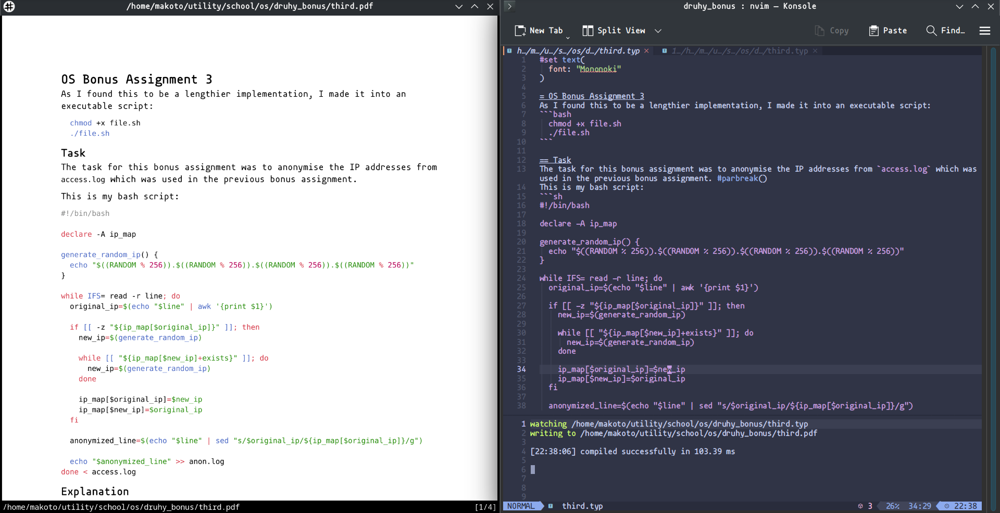

As I have been recently posessed by the spirit of academic comeback this winter semester, I don't turn down ways to make my school work easier or more interesting. Since I run Linux as a daily driver, I've been using LaTeX for my more formal school assignments and documentation, but wrote notes in simple .txt files in Neovim. So when my friend recently showed me Typst, I instantly jumped on the idea of using it. It is basically a mix of Markup and LaTeX with clearer syntax and scripting capabilities. And very importantly, I'd instantly have good looking PDF notes for anything I need to study. I also prefer to navigate through text using Vim motions and I cannot edit those when I allow them on OverLeaf. When it comes to local LaTeX compiling, I've experienced issues with it and really don't feel like fixing them.
Since I am lazy and Ubuntu, which I use for most of my school and personal work, isn't very famous for being up-to-date and having a vast package manager, I decided that I'll use Typst on Arch. I actually really enjoy using Arch because of its incredible Arch User Repository. The intallation is as simple as can be:
sudo pacman -S typst
Afterwards, some polishing was needed. I got a plugin for syntax highlighting and an LSP which also allows for the PDF to be updated as you type. I've noticed the second one also allows for syntax highlighting, so there is a chance that I don't need both but I honestly didn't feel like fixing it if it didn't create any problems. Anything more you need to know is in the linked GitHub repositories.
The typst.vim plugin is very easy to set up. I use LazyVim, so I simply added a Lua file to the plugin directory. This is the content of the file:
return {
'kaarmu/typst.vim',
ft = 'typst',
lazy=false,
}
My config is located at /home/user/.config/nvim/lua/plugins/ but this can differ for others.
The LSP has to be installed using init.lua. There are some prerequisites, but I think most people with LazyVim or anyone who simply uses Neovim to code already has the required plugins. Then you simply edit yout init.lua by adding this:
require'lspconfig'.typst_lsp.setup{
settings = {
exportPdf = "onType" -- Choose onType, onSave or never.
-- serverPath = "" -- Normally, there is no need to uncomment it.
}
}
The LSP however made me face some problems when I was writing notes in the Slovak language. I suppose it was because special characters, but everytime I typed anything while the file was in Slovak, I was bombarded with an onslaught of error pop-ups because of semantic tokens and it was basically unusable. I have asked my dear friend Ash if he, by some chance, knew how to help me. Surprisingly, he has a similar problem in the past and knew what to do to help. I tried disabling semantic tokens myself, but that didn't work. I completely honestly have no idea what he even did but this is the edited LSP setup in init.lua which lets me use Typst in Slovak in peace:
lspconfig.typst_lsp.setup({
on_attach = function(client, bufnr)
client.server_capabilities.semanticTokensProvider = nil
vim.lsp.semantic_tokens.stop(bufnr, client.id)
end,
settings = {
exportPdf = "onType", -- Choose onType, onSave or never.
-- serverPath = "" -- Normally, there is no need to uncomment it.
},
})
The only thing keeping me from switching straight to Typst was that I was missing a preview like I had with LaTeX on Overleaf. I tried looking for something but the only plugin I found used a web browser for the preview and I didn't like that. Then I came across DogeyStamp's blog post about his setup and I instantly fell in love with it. I have reached out to him to ask for permission to write about how I used his tips, so I'd like to thank him one more time for this chance. This full blog post about Typst can be found here.
Since his script is written in Vimscript, as far as I'm aware, and I run LazyVim which uses Lua, I had to convert his setup to work with mine. I also edited it a little according to my personal preferences. I found the window for compiler errors very useful but as I would already have half my screen taken up by the PDF, a vertical window left not much space for my actual Typst code. I made it so that the window that opens for me is horizontally below my code and my cursor also automatically goes back to the code and doesn't stay within the compiling messages. I also pefered different bindings, specifically Ctrl+R for watching and Ctrl+O for opening the PDF. O stood for "open" but I honestly forgot what R was supposed to stand for. From DogeyStamp's code:
function TypstWatch()
vsp
vertical resize 20
exec 'terminal ' .. 'typst watch ' .. expand("%:")
exec "norm \< c-w > h"
endfunc
nnoremap <silent> <leader> fc :call TypstWatch() <cr>
nnoremap <silent> <leader> fr :silent exec "!zathura --fork " . expand("%:p:r") . ".pdf &" <cr>
I got mine:
function TypstWatch()
vim.cmd("sp")
vim.cmd("resize 10")
vim.cmd("terminal typst watch " .. vim.fn.expand("%:p"))
vim.cmd("wincmd k") -- Move cursor back to the upper pane
vim.cmd("setlocal winfixheight")
end
vim.api.nvim_set_keymap("n", "&lf;C-r>", ":lua TypstWatch()<CR<", { noremap = true, silent = true })
vim.api.nvim_set_keymap(
"n",
"<C-o>",
':lua print("Running: zathura --fork " .. vim.fn.expand("%:p:r") .. ".pdf") os.execute("zathura --fork \\"" .. vim.fn.expand("%:p:r") .. ".pdf\\" &")<CR>',
{ noremap = true, silent = true }
)

Some things for me, of course, needed a more workaround or complicated way of setting up compared to Ubuntu. My issues with typing on Arch was that the y and p commands didn't copy and paste to and from the system clipboard. When running :checkhealth, a clipboard tool was found, I had already installed xclip since I utilise it the terminal when copying large files. I am running Wayland on KDE, and found out that I needed a different clipboard tool. I chose wl-clipboard and it instantly fixed this issue.
sudo pacman -S wl-clipboard
My last issue was that I was facing that remapping my keyboard seemed impossible. I am a weird person who uses the Slovak keyboard layout my entire life and I simply cannot code on another layout. However, there are minor differences between systems for this layout. I tried basically every way of editing my keymap but it either didn't work for my system or didn't fulfill my needs, as I needed to remap a combination of keys and not just a simple event. I found Input Remapper, a GUI tool which suited all my needs. It's available for download through yay, which I didn't yet have, so I used this tutorial. Afterwards, the download was simple, through the commands listed in their GitHub repo:
yay -S input-remapper-git
sudo systemctl enable --now input-remapper
Then I remapped the appropriate keys and combinations through the tool. However, the remapping didn't persist through reboot. This was simply fixed by adding a single command to the autostart start.sh script, which I found here in the CLI section. I had to sudo the command because it didn't have permissions to read the devices.
sudo input-remapper-control --command autoload